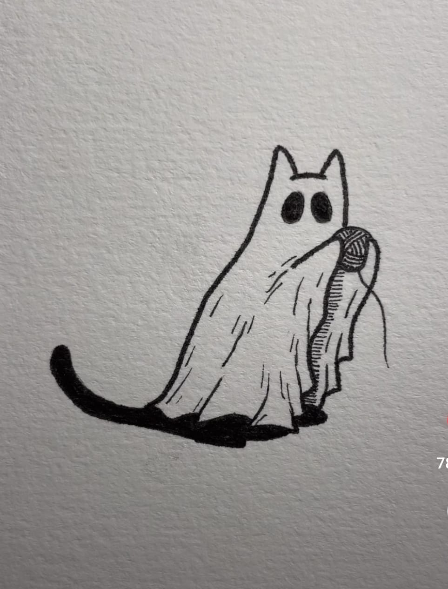

Curriculum Vitae.

Andrés Muñoz.
Resumen.
El es Andrés Muñoz, actualmente vive en la ciudad de Temuco, novena region, tiene su propia pyme de carpinteria, se dedica solo a la seccion
de muebleria a pedido, lleva mas de 5 años dedicandose a la carpinteria mueblista, pero lo que mas lo apasiona es la escalada tanto en roca, como en boulder
haciendo clases a personas principiantes lleva 10 años de experiencia compartiendo todo su conocimiento con todo aquel que quiere escalar y sus estudios fueron de
tecnico en sonido, en la universidad Santo Tomas, lo cual lo unico que dejo en experiencia fue su trabajo en equipo y aprovechar los conocimientos
adquiridos para sus propositos de musico o ompartirlos con sus amigos.
Datos Personales.
- Nombre: Andrés Felipe Muñoz Castillo.
- Lugar de Nacimiento: Santiago, Chile.
- Fecha de Nacimiento: 11 de noviembre de 1993.
Estudios.
- - Colegio Nueva Conecpcion, Enseñanza Media.
- - Tecniso en Sonido, Universidad Santo Tomas.
- - Carpinteria Mueblista, Domestik.
- - Seteador Local, FEACH.
Ir a mi portafolio
Perfil de Instagram de Andrés Muñoz